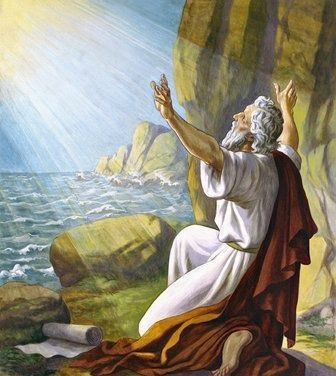

Oapóstolo João, por inspiração divina, escreveu o livro de Apocalipse e na primeira página relatou: Apocalipse 1:10. Em algumas Bíblias este texto está adulterado, colocaram dia de domingo no lugar de dia do Senhor. Seria tremenda contradição do apóstolo João se ele afirmasse que o dia do Senhor é o domingo, haja vista, que o Próprio João escreveu: Apocalipse 11:19. Com certeza, a Lei de Deus estava na arca do concerto em visão do santuário no céu, o qual está inserido o sábado. O profeta João afirmou que viu a arca da aliança no santuário celestial, a qual contém a Lei e por conseguinte o Sábado, o quarto mandamento, escrito pelo dedo de Deus. Êxodo 31:18. Êxodo 32:16. I Reis 8:9.
Como prova contundente de que o apostolo João se referiu ao Sábado, quando escreveu no “dia do Senhor” fui arrebatado em espírito (Apoc. 1:10), vamos invocar os escritos Patrísticos, documentos contemporâneos à João. A primeira prova que trago à baila, é a controvérsia quartodecimana, ocorrida logo após a morte do apóstolo João, defendida por seu discípulo Policarpo, que conservava os ensinamentos e tradições apostólicas. A controvérsia quartodecimana, ocorreu entre Policarpo e o bispo de Roma Aniceto, o bispo de Roma havia acolhido determinação de seu antecessor, o bispo Sisto I, que havia mudado a data da celebração da Santa Ceia do dia 14 de abibe ou nisan do calendário judaico para o primeiro domingo subsequente a essa data, Policarpo não aceitou e foi a Roma tentar convencer bispo local a voltar ao princípio estabelecido por João, no entanto, não logrou êxito em sua empreitada. A igreja de Roma exaltou o domingo baseado na ressurreição de Cristo, com a mudança da celebração da Ceia e posteriormente firmou como dia de guarda, perseguindo e excomungando quem não aceitasse. Vejam, com efeito, o texto Patrístico:
Segundo Tertuliano, Policarpo teria sido ordenado bispo pelas mãos do próprio apóstolo João... Irineu nos fornece mais alguns dados importantes sobre Policarpo: foi estabelecido bispo da Ásia, na Igreja de Esmirna, pelos próprios apóstolos. Ainda segundo Irineu, Policarpo empreendeu uma viagem a Roma sob o pontificado de Aniceto, por volta do ano 155, para discutir com ele a data da celebração da Páscoa. Os asiáticos a celebravam no dia 14 do mês judaico de Nisan, qualquer que fosse o dia da semana. Os ocidentais, em Roma, portanto, celebravam-na sempre no domingo, dia da ressureição. No tempo de Irineu, esta tornou-se uma questão aguda. Em 170, o papa Vítor quer forçar as igrejas da Ásia a aceitar o costume ocidental, ameaçando-as com a separação da comunhão católica. Irineu intervém relatando ao papa Vítor a entrevista de Policarpo e Aniceto. Esta carta é outro testemunho de primeira grandeza: apelando para a autoridade do apóstolo João, foi a Roma discutir com o papa Aniceto a data da celebração da Páscoa, em 155, tentando um acordo. (...) Aniceto não persuadiu Policarpo a deixar de observar o que com João, o discípulo de nosso Senhor, e com os outros apóstolos (...), tinha sempre observado.
Padres Apostólicos, 2015, ed. Paulus, pág 131-132
O texto é lídimo, quando retrata que João e demais apóstolos celebravam a Santa Ceia na data judaica, se João em Apocalipse 1:10 afirmasse que o dia do Senhor é o domingo com arrimo na ressurreição, aqui seria uma excelente oportunidade de selar esse entendimento, no entanto, ele se manifestou contrário a celebração da Ceia no domingo, porque esse dia nunca foi santificado para João e os apóstolos, muito menos para seus discípulos que o precederam, como Policarpo e Polístemes. Outro texto de excelência para deslinde da controvérsia, está cunhado em um escrito encontrado em 1873 no mosteiro do santo sepulcro em Constantinopla, é o documento mais impotante da era pós-apostólica intitulado de Didaqué ou Ensino dos Doze Apóstolos. Segundo os estudiosos esse documento data dos primeiros séculos do cristianismo, aceito por muitos como inspirado, motivo que levou Eusébio de Cesareia a colocá-lo entre os escritos apócrifos. Esta obra é composta de 16 capítulos, no entanto o que importa para dirimir a controvérsia acerca do tema vergastado são os capítulos 08 (fala do jejum) e 14 (fala recepção Sábado), vamos ao textos:
Que os jejuns de vocês não coincidam com os dos hipócritas. Eles jejuam no segundo e no quinto dia da semana. Vocês, porém, jejuem no quarto e no dia da preparação.
Didaqué, capítulo 08
Qual é o dia de preparação? As Escrituras respondem: Lucas 23:54. Se “estava para começar o Sábado”, com efeito, o dia de preparação do Sábado, segundo a Lei, era sexta-feira: Lucas 23:56.
Reúnam-se no dia do Senhor para partir o pão e agradecer, depois de ter confessado os pecados, para que os sacrifícios de vocês sejam puros.
Didaqué, capítulo 14
Qual é o dia do Senhor? Vamos nos valer das Escrituras: Isaías 58:13-14. Como visto, não encontramos nenhuma evidência de que o dia do Senhor é o domingo. Ao passo que o Sábado, como dia do Senhor, encontramos provas sobejas na Bíbila.
O Sábado é o dia do Senhor, considerando que não existe nenhuma evidência nas santas escrituras que prove ou mencionem que a igreja de Deus guardou o famigerado dia de domingo, segundo as provas bíblicas que seguem, veremos que tanto no Velho como no Novo Testamento o Sábado sempre foi o dia do Senhor, portanto, o dia de guarda de sua Igreja: O Sábado não foi instituído no Sinai, como alguns propõem, porque a Lei, os Estatutos e os Preceitos, eram passados de pai para filhos na era patriarcal, era baseado no costume, Deuteronômio 11:19. no Sinai tanto o Sábado como a Lei foi apenas codificado por Moisés, porque já existia como norma para o povo de Deus, vejamos o que diz o mandamento acerca do dia do Senhor. Êxodo 20:8. Quando o Senhor manda lembrar é porque o Sábado já era guardado e estava no esquecimento em decorrência dos anos de cativeiro no Egito, Ademais, o Senhor disse: Êxodo 20:9. Veja, que o Senhor exige Santificar o Sábado e manda trabalhar no domingo, quando diz "seis dias trabalharás", certamente será do primeiro dia (domingo) até o sexto. E de forma precisa o Legislador celestial diz qual é o dia do Senhor. Êxodo 20:10.
É imperioso enaltecer, que o verso onze, diz que o Senhor abençoou e santificou o dia do Sábado e não o domingo. O profeta Isaías chama a atenção para a santidade do Sétimo dia e também o chama de santo dia do Senhor. Isaías 58:13. Ezequiel 20:12. Mateus 12:8. O próprio Jesus, que dizem ter abolido o Sábado, embora as Escrituras digam o contrário, afirmou: Mateus 5:17-18. Jesus exortou os discípulos a orarem para evitarem transgredir o Sábado. Mateus 24:20. O nosso Senhor Jesus Cristo foi claro ao afirmar que somente os que guardam os seus mandamentos estão provando que o amam, por serem detentores de sua natureza divina e guardarem sua Lei por amor, João 14:15. Ele, segundo seu costume guardou o Sábado e não o domingo. Lucas 4:16. Portanto, devemos andar como Ele andou. I João 2:6. Mediante das imanes quantidades de provas expostas, podemos inferir que em Apocalipse 1:10, o apóstolo João com certeza está se referindo ao sábado como dia do Senhor.
Não podemos ignorar as advertências do apóstolo João no tocante a obediência à Santa Lei de Deus; ele chama de mentirosos e Isaías os chama de rebeldes os que não guardam a Lei e dizem que o amam. I João 2:3-4. Isaías 30:9. Segundo as santas Escrituras os que não querem ouvir nem obedecer sua Lei, é alcançado pelo Provérbios 28:9. E nunca serão justificados porque são simples ouvidores da Lei, e não foram justificados por não abandonar seus pecados, que é a transgressão da Lei. Romanos 2:13. I João 3:4. Estão separados de Deus. Mas as vossas Isaías 59:2.
Restou comprovado de forma sobeja que o dia do Senhor é o Sábado, veremos como o domingo foi posto como dia de guarda e por quem.
Por inspiração divina, o profeta Daniel escreveu que a verdade seria deitada por terra. Daniel 8:12. E quando este evento acontecesse à verdade andaria tropeçando e ficaria oculta, sumida, como aconteceu na Idade Média impulsionada pelo filho da perdição, o papado. Nos últimos dias a justiça seria rejeitada e consequentemente a doutrina apostólica, por recrudescer a apostasia das igrejas, um dos espíritos de rãs, o falso profeta ou protestantismo apostatado (evangélicos), segundo escreveu o profeta Isaías: Isaías 59:14-15.
Por certo ele se referia a verdadeira doutrina ensinada pelos apóstolos, ostentada pela igreja que guarda os mandamentos, os remanescentes nos últimos dias, e consequentemente o Sábado faz parte dessa doutrina. Haja vista, que, Apocalipse 12:17. Por ser o sinal entre Deus e seu povo, o Sábado é a pedra de toque no evento do sinal de Deus (Sábado) e o sinal da besta (domingo). No fim dos tempos, haveria controvérsia acerca desses dois dias, sabemos que o Sábado foi instituído no Éden, por Deus, que o ratificou e codificou no Sinai com o próprio dedo, mas, e o domingo quando foi instituído e por quem? Até o ano 62 d. C. a verdade ainda estava intacta, no entanto o apóstolo Paulo advertiu, II Tessalonicenses 2:7, e que depois da morte dos discípulos entraria na igreja lobos devoradores com a finalidade de torcer as verdades e ajudar a deitá-las por terra, e levar discípulos após si, Atos 20:29-30. Entre os vários lobos cruéis que se introduziram na igreja apostólica, nenhum foi tão decisivo como o Imperador Constantino no tocante a mudança da guarda do Sábado para o domingo, a verdade foi adulterada, e a deturpação da verdadeira fé se multiplicou com assombrosa rapidez. Ritos e cerimônias, das quais nem Paulo nem Pedro jamais ouviram, entraram sub-repticiamente em uso e depois reclamaram o direito de serem consideradas instituições divinas. Reflitam na citação abaixo:
Constantino foi imperador de Roma de 306 a 337 d.C. Foi ele adorador do sol durante os primeiros anos do seu império. Mais tarde afirmou haver-se convertido ao cristianismo; mas, de coração, continuou venerador do sol.
HAYNES, Carlyle B. 2004, Do Sábado para o Domingo, pág. 44
Com a pseuda conversão de Constantino, as sangrentas perseguições investidas contra os cristãos cessaram, no entanto, perigo maior pairava sobra a Igreja: apostasia, costumes pagãos introduzidos na igreja, culto às imagens, imortalidade da alma, purgatório, o fim da igreja da comunhão e exaltação da igreja institucional, formalista e união da Igreja com o Estado. A mais antiga lei dominical conhecida na história é a de Constantino, promulgada em 321 A.D. Assim reza ela:
Devem os Magistrados e as pessoas residentes nas cidades repousar, e todas as oficinas ser fechadas no venerável dia do sol. No campo, entretanto, as pessoas ocupadas na agricultura podem, livre e licitamente continuar suas ocupações; porque acontece muitas vezes que nenhum outro dia se lhe assemelha para a semeadura de sementes ou para a plantação de vinhas; tememos que, pela negligência do momento apropriado para tais operações, as bênçãos celestiais sejam perdidas. (Promulgada aos 7 dias de março, sendo Crispo e Constantino cônsules pela primeira vez cada um) – Codex Justinianus, liv.3, tit. 12 e 13, traduzido em PHILIP SCHAFE, D.D. History of the Cristian Church, volume sete da edição, 1902), vol. III, pág. 380
HAYNES, Carlyle B. 2004, Do Sábado para o Domingo, pág 43-44
Em sequência a esse decreto inicial, imperadores e papas em sucessivos séculos acrescentaram outras leis ao fortalecimento da observância do domingo.
Aquilo que começou, entretanto, como ordenança pagã, terminou como regulamentação cristã; e uma longa série de decretos imperiais, durante o quarto, quinto e sexto séculos, impôs com crescente rigor a abstinência do trabalho no domingo.
Que estes quatro passos foram dados tanto pela igreja como pelo Estado para tornar decisivo que o domingo substituísse o Sábado.
HAYNES, Carlyle B. 2004, Do Sábado para o Domingo, pág. 46
No ano de 364 d.C. no Concílio de Laodicéia, a Igreja Católica transferiu definitivamente a guarda do sábado para o primeiro dia da semana (domingo), sendo agora santificado e obrigatório, veja o teor do decreto:
Os cristãos não devem judaizar [guardar o Sábado], ou estar ocioso no Sábado, mas trabalhando nesse dia; o dia do Senhor (domingo), entretanto, honrarão especialmente, e como cristãos não devem, se possível, fazer qualquer trabalho nele. Se, porém, forem apanhados judaizando, serão separados de Cristo.
Cânon 29 do Concílio de Laodicéia.
A verdade foi lançada por terra, cumprindo as profecias. O dia adorado por pagãos foi exaltado. No Egito, adoravam o sol no primeiro dia da semana. "O deus sol", era como o chamavam. O Egito, foi, na antiguidade, o foco central de adoração ao sol, que recebeu o nome de Amon-Rá. Com as conquistas de impérios, este costume foi se alastrando ente outros povos, inclusive os Gregos e Romanos que adoravam o sol, chamado de "deus mitra", no primeiro dia da semana celebravam seus cultos. O domingo foi estabelecido gradativamente pela igreja católica, o papa Inocêncio chamou dia de jejum, outros chamavam dia de recreio, o certo é que aos poucos ele foi substituindo o Sábado e seus guardadores perseguidos e mortos pela inquisição romana.
Entre as doutrinas estabelecidas em uma carta do papa Inocêncio I, escrita no último ano de seu pontificado (416), encontra-se aquela segundo a qual o domingo deveria ser observado como dia de jejum.
HAYNES, Carlyle B. 2004, Do Sábado para o Domingo, pág 46
Em 538, no Concílio de Orleans, ... foi ordenado que todas as coisas anteriormente permitidas no domingo continuassem em vigor; mas que se abstivessem do trabalho com arado, ou em vinhas, sega, ceifa, debulha, cultivo, cercagem a fim de que as pessoas pudessem frequentar a igreja devidamente. Por volta de 590 o papa Gregório, em carta dirigida ao povo romano qualificou como profetas do anticristo aqueles que ensinassem que o trabalho não devesse ser feito no sétimo dia.
HAYNES, Carlyle B. 2004, Do Sábado para o Domingo, pág 46

O papado foi impulsionado pelo imperador de Roma Oriental, com capital Constantinopla, Justiniano em 533 d.C., declarou o papa como o cabeça de todas as igrejas, passando o papado a dominar a Europa, no entanto havia um entrave, as profecias relatam que Daniel 7:20. O profeta Daniel estava revelando uma besta que se encontra no livro de Apocalipse. Apocalipse 13:1. Os dez chifres representam as divisões ocorridas no Império Romano quando seu imperador Rômulo Augusto foi derrotado, e o império dividido entre dez tribos bárbaras, três deles eram o entrave para o bispo de Roma dominar todas as igrejas porque eram arianos, ou seja, o bispo.
Ário, pároco da antiga e influente igreja de Alexandria, pregou sua doutrina ao mundo e ocasionou tão violenta controvérsia na igreja cristã, que o imperador Constantino convocou o concílio geral de Nicéia em 325 para considerar e decidir acerca da doutrina ariana. Ário sustentava que o Filho era total e essencialmente distinto do Pai; que era o primeiro e mais nobre dos seres que o Pai criou do nada, o instrumento por cuja operação subordinada ao Pai Todo-Poderoso que formou o universo, e portanto, era inferior ao Pai tanto em sua natureza como na sua dignidade. Esta opinião foi condenada pelo concílio, o qual decretou que Cristo era de uma mesma substância com o Pai. Com isso, Ário foi desterrado para ilíria, e seus seguidores foram compelidos a dar seu assentimento ao credo composto naquela ocasião. (Mosheim, século 4, parte 2, cap. 4; Stanley, History of the Eastern Church [História da Igreja Oriental], pag. 239).
SMITH, Uriah, 1994, As Profecias de Daniel, pág 99
Por certo, que a nefasta doutrina ariana não foi totalmente suplantada, dos dez reinos bárbaros, três deles seguiram os ensinamentos arianos, tornando-se um grande entrave para a realização do sonho do bispo de Roma dominar todas as igrejas, então, com ajuda do imperador Justiniano, as três potências ou chifres arrancados diante do papado foram os hérulos, os Vândalos e os Ostrogodos. Daí por diante cumpriu-se o que falou os profetas Daniel e João, vejam: Daniel 7:23-26. O papado é representado como a ponta pequena, surgiu das ruínas do Império Romano. Daniel 7:8. Com a eliminação dos três reinos ou chifres, as doutrinas arianas foram sufocadas em 538, exatamente neste ano foi expulso de Roma o último poder opositor do papado, os Ostrogodos. Com sua queda desenvolveu-se notadamente a supremacia papal. Virgílio bispo de Roma, tornou-se o primeiro papa com jurisdição temporal. Estava consolidado o papado que cumpriu as profecias, da seguinte forma. Apocalipse 13:5-7.
O papado seguiu seu curso de blasfêmias, mudança da Lei, trocando o dia de guarda do Sábado para o domingo e mergulhou o mundo cristão em sangue e fogueiras com o nefasto tribunal da santa inquisição. Os Valdenses, foram o povo que defendeu a verdade no período desta apostasia, quando Constantino uniu a igreja com o Estado e introduziu paganismo maculando a verdadeira fé, houve o primeiro cisma (separação) na igreja primitiva, um pequeno grupo não aceitou a dilapidação da doutrina e separou-se. Os valdenses tinham os escritos originais dos apóstolos e continuaram guardando o Sábado do sétimo dia e foram ferozmente perseguidos por papas sedentos de sangue.
O último parágrafo das citações acima indica que ainda havia na igreja, mesmo em 590 D.C., aqueles que, não só observavam o Sábado bíblico, como ensinavam sua observância. De fato, tal observância, por parte de uns poucos fiéis, foi sempre posta em prática através de todos os séculos cristãos. Entre os chamados Valdenses havia observadores do sétimo dia.
HAYNES, Carlyle B. 2004, Do Sábado para o Domingo, pág 47
Com a consolidação da Igreja Católica em 538, as leis em favor da guarda do domingo foi ampliada. A própria igreja romana, nunca negou que fez tal mudança e se jacta de ter autoridade para isso. Veja texto da lavra de um dos bispo a famigerada igreja:
As próprias leis civis e eclesiásticas que fazem referência ao desenvolvimento da legislação dominical tornam claro que Eusébio, notável bispo da Igreja Católica, considerado o pai da história eclesiástica, e bajulador e biografo de Constantino, foi justificado ao afirmar: "Todas as coisas, sejam quais forem, que houvesse sido obrigatórias fazer no Sábado, estas nós a transferimos para o dia do Senhor." Citado em Robert Cox, Literature of the Sabbath Question, vol. I, pág. 361.
HAYNES, Carlyle B. 2004, Do Sábado para o Domingo, pág 47
Neste período houve o cumprimento das profecias feitas por Paulo acerca da apostasia e manifestação do homem do pecado, II Tessalonicenses 2:3-4. e que mudaria os tempos e a Lei segundo asseverou o profeta Daniel: Daniel 7:25.
A substituição do Sábado pelo domingo não é assunto que a Igreja Católica negue ou procure esconder. Ao contrário, ela a admite francamente e a aponta, na verdade, com orgulho, como evidência de seu poder de mudar até um dos mandamentos de Deus. Leiamos alguns trechos do Catecismo Católico:
A obra do Rev. Peter Geiermann, C.S.R the Convert’s Catechism of Catholic Doctrine, recebeu em 25 de janeiro de 1919 a benção apostólica do papa Pio X. Com referência ao assunto da mudança do Sábado, diz o citado catecismo:
Pergunta: Qual é o dia de repouso?
Resposta: O dia de repouso é o Sábado.
Pergunta: Porque observamos o domingo em lugar do Sábado?
Resposta: Observamos o domingo em lugar do Sábado porque a Igreja Católica, no Concílio de Laodicéia (336 A.D.), transferiu a solenidade do Sábado para o domingo”. Segunda edição, pág. 50
Foi, pelo Rev. Stephen Keenan, arcebispo de Nova Iorque, aprovada uma obra intitulada: A Dotrinal Catechism, faz ela estas observações quanto à questão da mudança do Sábado:
Pergunta: Tendes qualquer outra maneira de provar que a igreja tem poder para instituir dias de guarda?
Resposta: Não tivesse ela tal poder, não teria feito aquilo em que todas as modernas religiões com ela concordam – a substituição da observância do Sábado, o sétimo dia, pela observância do domingo, o primeiro dia da semana, mudanças para a qual não há nenhuma autorização escriturística – pág. 174
HAYNES, Carlyle B. 2004, Do Sábado para o Domingo, pág 48
“Em seu livro Plain TalkAbout the Protestantismo of Today, Mosenhor Segur Afirma: Foi a igreja católica que, por autorização de Jesus Cristo, transferiu este repouso para o domingo em memória da ressureição de nosso Senhor. Dessa forma, a observância do domingo pelos protestantes é uma homenagem que eles prestam, contradizendo-se a si próprios, à autoridade da igreja católica _ Edição de 1868, parte 3, sec. 4, pág. 225
HAYNES, Carlyle B. 2004, Do Sábado para o Domingo, pág 50
Muitas histórias e argumentos satânicos foram empregados por defensores do domingo ao longo dos séculos, veja este exemplo: “A ausência de autoridade escriturística para a guarda do domingo ainda ocasiona não pequenas dificuldades. O povo punha em dúvida o direito de seus instrutores de deixarem de lado a positiva declaração de Jeová: o sétimo dia é o sábado do Senhor teu Deus, para honrar o dia do sol. A fim de suprir falta de testemunho bíblico, foram necessários outros expedientes. Um zeloso defensor do domingo, que pelos fins do século XII visitou as igrejas da Inglaterra, encontrou resistência por parte de fiéis testemunhas da verdade; e tão infrutíferos foram os seus esforços que se retirou do país por algum tempo, em busca de meios para fazer valer os seus ensinos. Ao voltar, a falta foi suprida, e em seus trabalhos posteriores obteve maior êxito. Trouxe consigo um rolo que dizia provir do próprio Deus, e conter a necessária ordem para a observância do domingo, com terríveis ameaças para amedrontar o desobediente. Este precioso documento — fraude tão vil como a instituição que apoiava, dizia-se haver caído do céu, e sido achado em Jerusalém, sobre o altar de S. Simeão, no Gólgota. Mas, em realidade, o palácio pontifical em Roma foi a fonte donde procedeu. Fraudes e falsificações para promover o poderio e prosperidade da igreja tem sido em todos os séculos consideradas lícitas pela hierarquia papal. O rolo proibia o trabalho desde a hora nona, três horas da tarde, do sábado, até ao nascer do sol na segunda-feira; e declarava ser a sua autoridade confirmada por muito milagres.
Ellen G. White, O Conflito dos Séculos, pág 624
Restou comprovado de modo cristalino, que a Igreja Católica seguiu os passos de Constantino na mudança do sábado para o domingo, o argumento bíblico que tiraram do seu legitimo contexto para fundamentar essa farsa foi a ressurreição de Cristo no domingo, argumento defendido até hoje pelos evangélicos, fazendo uma imagem a besta, bebendo do vinho de sua prostituição, suas doutrinas e dogmas. Não olvidando, que o domingo é uma instituição papal, sem qualquer sombra de dúvidas, podemos afirmar pelas Escrituras, que o Sábado é o dia do Senhor, não o domingo, na verdade, trata-se de uma perigosa afronta estabelecida pelo Dragão (Satanás) utilizando a besta (papado) e o Falso profeta (Evangélicos), para anular a guardo do Sábado escrito pelo dedo de Deus. Vamos estudar o porquê Jesus ressuscitou no domingo do ponto de vista bíblico.
Após o pecado do homem, foi apresentado o Plano de Redenção, as festas judaicas fazem parte do aludido Plano com seus tipos e sombras, estipulando que na Páscoa judaica o cordeiro de Deus que tira os pecados do mundo, Jesus, deveria morrer, pagando o preço pelo pecado. A Páscoa era celebrada no dia 14 de nisã, o dia 15 era um Sábado cerimonial e o dia imediato ao Sábado, dia 16, o Sacerdote levantava os molhos de cevada, tipificava a ressurreição de Cristo e dos primeiros salvos. De acordo com o livro de Levítico. Levítico 23:10-12.

O molho das primícias era movido no dia imediato ao Sábado cerimonial, que podia cair em qualquer dia, na ocasião da morte de Cristo, caiu no mesmo dia do Sábado semanal, por isso o apóstolo João chama o grande dia de Sábado, porque coincidiu naquele ano cair os dois Sábados juntos, o da festa da páscoa com o semanal, por isso o chamaram de o grande Sábado. João 19:31. Eles matavam o cordeiro pascoal em 14 de nisã, celebravam o sábado pascoal em 15 de nisã e ofereciam o molho movido dos primeiros frutos em 16 de nisã, independente do dia da semana em que essas datas caíssem. A Páscoa tipificava o cordeiro (Cristo) que deveria ser morto pagando o preço pelo pecado, ao passo, que a festa das primícias representavam a ressurreição de Jesus, ressuscitando os primeiros justos, conforme se vê: I coríntios 15:20. No momento da morte de Cristo as sepulturas se abriram e muitos justos ressuscitaram cumprindo uma parte do Plano de Redenção a qual a festa das primícias tipificava a ressureição. Mateus 27:52-53. Com efeito, concluímos que Jesus morreu por ocasião da festa das primícias e ressurgiu, ou seja, sua ressureição foi deflagrada no primeiro dia da semana, porque nesse ritual o sacerdote, movia os molhos perante Deus. Era o dia seguinte ao Sábado da Festa da Páscoa e Jesus de acordo com essa profecia, teria que ressuscitar, e ele esteve em repouso (na sepultura) no Sábado segundo a Lei. Por esse motivo Jesus ressuscitou no domingo, não porque estivesse fazendo qualquer mudança do sábado para o domingo, como os evangélicos, imagem da besta, pretendem afirmar.
Resumindo os ensinos da observância dos tipos pascoal, temos a seguinte reflexão: A páscoa é simbólica da morte de Cristo. Assim como morria o cordeiro pascoal, Cristo morreu. O sangue do cordeiro livrou outrora Israel do anjo destruidor. O sangue de Cristo hoje nos reconcilia com Deus. Segundo tipificava o molho movido, a festa das Primícias é simbólica da ressurreição, segundo ensinamentos:
O molho movido das primícias era o serviço principal do dia, mas um cordeiro era também sacrificado como uma oferta queimada. Nenhuma poção das primícias era em qualquer época queimada no fogo, pois representava os seres ressuscitados revestidos da imortalidade para nunca mais estarem sujeitos à morte ou fraqueza. "Cristo (o antítipo), ressuscitou dos mortos, tornando-se as primícias dos que dormem". I Coríntios 15:20. O símbolo encontrou o antítipo.
HASKELL, Stephen N. A Cruz e Sua Sombra, pág 104 e 105.
Portanto o domingo não pode ser tipo da ressurreição de Cristo, porque esse tipo era representado pelos molhos na festa das prímicias. O Plano de Redenção, não permite a existência de dois tipos para um antítipo. Quem determinou que o domingo era simbólico da ressurreição foi o bajulador do Imperador Constantino Eusébio, alegando que o Messias ressuscitou no domingo, sem nenhum critério profético muitos menos sustentado nos tipos e sombras a qual as festas representavam. Ele buscou a passagem da ressurreição de Cristo no domingo como prova de que o domingo é o dia do Senhor como Constantino havia promulgado. Na verdade o pioneiro adventista HASKELL, nos relata:
A obra da redenção foi completada no sexto dia. Assim como Deus descansou após concluída a obra da criação, Jesus descansou no sepulcro de José durante as horas sagradas do Sábado. Por quatro mil anos o Sábado havia sido observado como um memorial da criação, mas após a morte do Salvador sobre a cruz, o Sábado foi duplamente abençoado, sendo um memorial da criação como da redenção.
O Sábado, como uma grande ponte, abrange todo o tempo. O primeiro pilar que sustenta essa grande instituição foi colocado no Éden, quando, de acordo com o relato encontrado em Gênesis 2:2-3, Deus e o homem repousaram durante as sagradas horas do Sábado. O segundo pilar da ponte foi fundamentado entre os trovões do Sinai, quando Deus, ao proclamar o quarto mandamento como se encontra em Êxodo 20:8-11, deu como razão para o homem guardá-lo e santificá-lo o fato de ele ter repousado da obra da criação no sétimo dia. O terceiro pilar da ponte do Sábado foi santificado pelo sangue do Calvário. Enquanto Jesus, no túmulo, repousava da obra da redenção como registrado em Lucas 23:54-56, os seguidores de Cristo descansaram segundo o mandamento. O quarto pilar dessa maravilhosa ponte será estabelecida na nova Terra. Em Isaías 66:22-23 nos é dito que após ser removido o último vestígio da maldição do pecado da Terra, toda a carne, de um Sábado a outro, virá adorar perante o Senhor.
HASKELL, A Cruz e Sua Sombra, pág 101